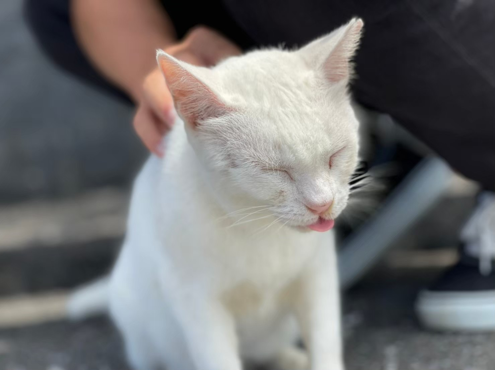

栗汰道について
| 名前 | 栗汰道 |
|---|---|
| 所属 | 大阪大学基礎工学部システム科学科知能システム学コース原田研究室 |
| 出身地 | 香川県宇多津町 |
| 趣味 | 海外サッカー観戦、旅行、アクアリウム |
| 生年月日 | 2000年10月13日 |
旅行日記
2024年8月10日 - 京都の夏を満喫

今年の夏は京都を訪れました。祇園祭で有名な四条通りを歩き、古都の風情を感じながら、歴史あるお寺や神社を巡りました。特に印象に残ったのは、清水寺から見渡す京都市内の眺めで、夕日に染まる街並みがとても美しかったです。
夜には鴨川沿いで食事を楽しみ、川のせせらぎを聞きながら過ごす時間は、とてもリラックスできました。また、抹茶スイーツで有名な茶寮でひと休みし、風味豊かな抹茶パフェを堪能しました。